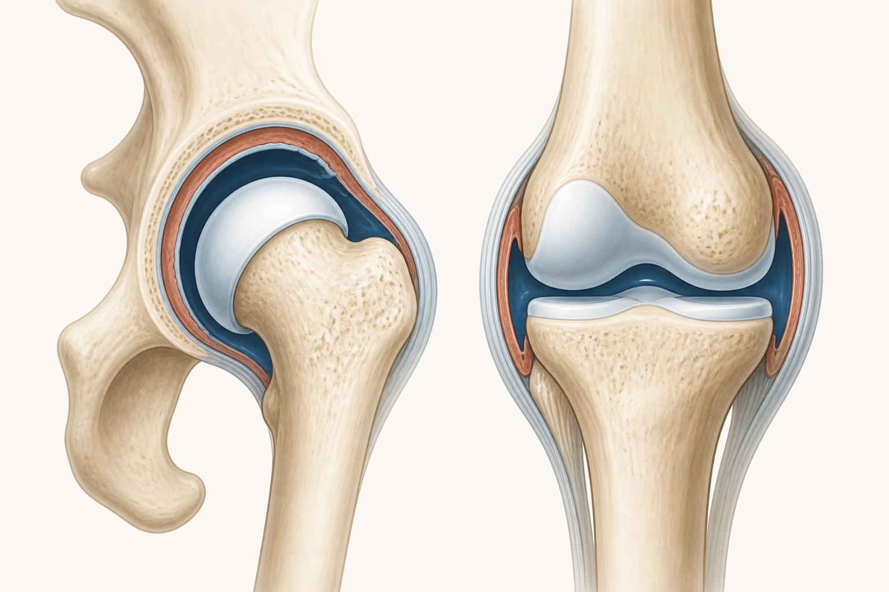

Joints in Practice
Not a catalog of every joint in the body. What each type is built to do, where the body trades range for stability, and the difference between a joint working hard and a joint in trouble.
A joint is just the place where two bones meet, but do not let that plain description fool you. What a joint is built to do, whether that is throwing a ball overhead, absorbing a heavy landing, or simply holding the pelvis together while a client walks, is set by its shape long before anyone ever loads it. You do not need to memorize every joint in the body. You need a small set of categories, a sense of what each type is built for, and a clear line between ordinary stiffness and a real problem.
This chapter sorts joints the way a coach actually uses them, by function rather than a long taxonomy. You will meet the handful of synovial joint types that do almost all of the moving, the joints that are built to barely move at all, the tradeoff between mobility and stability that runs up the whole body, and the short list of signs that mean a joint needs a professional's eyes rather than another stretch.
What makes a joint move, or not
Bones do not touch each other directly at a moving joint. Between them sits cartilage to cushion the surfaces, ligaments to hold the bones in relation to each other, and, at most of the joints you will care about, a fluid filled capsule called the synovial capsule that lubricates the surface and lets it glide. These synovial joints are the freely moving joints, responsible for almost every exercise you will ever program. Not every joint in the body is built this way. Some are held together by cartilage or dense fibrous tissue instead of a fluid capsule, and those joints are designed to move only a small amount, or not at all. We will get to those shortly, because a coach who understands why a joint is not supposed to move is just as useful as one who understands why it is.
The synovial joint types, sorted by what they do
Anatomy textbooks list six types of synovial joint. You do not need the Latin names to use them, you need the shape and the practical range each shape allows. Here they are, sorted roughly from the most mobile to the least.
- Ball-and-socket (shoulder, hip): a round head sitting in a cup shaped socket. This shape allows movement in every plane at once, forward and back, out to the side and in, and rotation, which is why the shoulder can reach in almost any direction and the hip can swing the leg through a large arc.
- Hinge (elbow, knee): two surfaces that open and close like a door, in one plane only. A hinge bends and straightens. It does not rotate on its own, any twist you feel through the knee during a movement is coming from the hip and ankle working around it, not from the knee joint itself.
- Pivot (the atlas-axis joint at the top of the neck, the radioulnar joint of the forearm): one bone spins around a peg or ring formed by another. At the top of the neck, the atlas, the first neck vertebra, rotates around a peg on the axis, the second neck vertebra, which produces most of the range used to turn the head and check a blind spot. In the forearm, the radius spins around the ulna to turn the palm up and down, a movement called supination and pronation.
- Condyloid, also called ellipsoid (the wrist): an oval surface fitting into an oval cup. It allows bending, straightening, and side to side movement, but very little rotation on its own, which is why the wrist can wave and deviate but cannot spin the way the forearm can.
- Saddle (the base of the thumb): two surfaces that each curve one way in one direction and the opposite way in the other, like a rider sitting in a saddle. This shape gives the thumb its two plane range, exactly what lets it swing across the palm to meet the fingers, a movement called opposition.
- Plane, also called gliding (the small joints between the carpal bones of the wrist and the tarsal bones of the foot, and the facet joints of the spine): flat or nearly flat surfaces that slide a short distance across each other. No single gliding joint moves very far on its own, but a chain of them, like the facet joints running down the spine, adds up to a meaningful amount of combined motion.
Joints that are built to barely move
Not every joint's job is producing motion. Some are built to transfer force and hold a structure together, and a coach hears about three of them often enough to be worth knowing by name.
The sacroiliac (SI) joint connects the sacrum, the triangular bone at the base of the spine, to the ilium, the wing of the pelvis, on each side. It is technically a synovial joint, but a stiff, irregular one, locked in place by some of the strongest ligaments in the body. Normal SI joint movement is measured in millimeters and a couple of degrees, not the inches and dozens of degrees you see at the hip. Its job is transferring load between the upper body and the legs and absorbing shock during walking and running, not swinging through a range.
Clients sometimes describe a manual therapy session where a provider "popped their SI joint back into place" and everything felt instantly better. What likely happened is real, an audible release and a genuine drop in muscle guarding and pain, but the mechanical story is usually overstated. Because the joint barely moves and is bound by dense ligaments, it is not sliding meaningfully out of place and being levered back in. The relief is more consistent with reduced muscle tension and a calmer nervous system than with a bone being repositioned. Treat the result as real and the mechanism as marketing.
The pubic symphysis is the joint at the front of the pelvis where the two pubic bones meet, held together by a pad of fibrocartilage rather than a fluid filled capsule. Under normal circumstances it allows only a tiny amount of give. It matters to a coach mainly in two situations, general pelvic stability work, and pregnancy, when hormonal changes loosen the surrounding ligaments and can make that small joint noticeably more irritable under load.
At the other extreme, the sutures of the skull are joints too, jagged seams where the plates of the skull interlock. In an adult they are effectively fused and allow no movement at all. They are a useful reminder that not everything anatomists call a joint is meant to move. Some joints exist purely to hold a structure together permanently.
The mobility versus stability tradeoff
Line the synovial joint types up next to their practical range and a pattern shows up immediately. More freedom to move tends to come with less built-in stability, and more built-in stability tends to come with less freedom to move. The shoulder is the clearest example. A ball-and-socket joint with a shallow socket buys enormous range, reaching overhead, behind the back, and out to the side, but that same shallow socket is inherently less stable and depends heavily on the surrounding muscles, especially the rotator cuff, to hold the ball in place. The hip is the other side of the same coin. It is also a ball-and-socket joint, but its socket is deeper and its ligaments are thicker, which trades away some range for a joint that tolerates heavy, repeated loading without much extra muscular help.
This tradeoff shows up again as you move up the whole body, and coaches who use this idea call it the joint-by-joint pattern. Roughly speaking, joints alternate jobs from the ground up. The ankle is built to move through a large range so it can adapt to the ground and absorb impact. The knee, sitting right above it, is comparatively built for stability, mainly a hinge that leans on its ligaments and does not tolerate much twisting force. The hip above the knee is mobile again, then the lumbar spine is built for stability, resisting rotation rather than producing it. The thoracic spine above the lumbar spine is meant to rotate and extend, and the shoulder blade region is built for stability so that the shoulder joint above it can move as freely as it does.
Knowing a joint's type tells you what to ask of it. Do not chase end-range loaded rotation at a hinge like the knee, that joint was not built to twist under load. Do respect that a pivot joint, such as the forearm or the top of the neck, is supposed to rotate, so mobility work there is usually well spent. And when a client complains about their SI joint, look first at whether the hips or lumbar spine on either side of it are doing their jobs, because a stability joint like the SI joint usually gets irritated by neighbors that are not moving or not stabilizing properly, not by a defect of its own.
Normal range versus a red flag
Every joint has an ordinary end range, the point where healthy tissue naturally stops the movement and you feel resistance or a stretch. A hinge like the elbow has a firm, fairly abrupt stop, largely bone meeting bone. A ball-and-socket joint like the hip has a softer, springier stop, mostly soft tissue tension. Some stiffness first thing in the morning, or after sitting for a long stretch, is also normal and usually eases within the first several minutes of movement. None of that is a reason to stop a session.
Straighten your own elbow all the way and gently press a little further. You will feel a hard, fairly sudden stop, mostly bone meeting bone, with very little give. Now rotate your straight arm in a big circle at the shoulder. The stop at the end of that range feels softer and more elastic, mostly the tension of muscle, ligament, and joint capsule. Both are completely normal end feels. Once you have felt the difference on your own body, it becomes much easier to notice when a client's joint stops in a way that does not match its type, for example an elbow that feels springy instead of firm at full extension.
A joint that locks, catches, or will not complete its normal range on a given rep. A joint that suddenly gives way or feels unstable under load, as if it cannot be trusted to hold the position. Sharp, pinching, or catching pain at one specific point in the range, rather than a general stretch or dull ache. Numbness, tingling, or pins and needles radiating down an arm or leg. Any joint symptom that follows real trauma, a fall, a collision, or a hard twist. None of these are things to stretch, mobilize, or push through in a session. They are your cue to modify the exercise, stop loading that joint, and refer the client to a physical therapist or physician for a proper evaluation. Recognizing that something is off is your job. Diagnosing it is not.
The takeaway
You do not need to catalog every joint in the body to coach well. You need to recognize the handful of shapes that do the moving, ball-and-socket, hinge, pivot, condyloid, saddle, and gliding, know that some joints, such as the sacroiliac joint, the pubic symphysis, and the skull sutures, are built to barely move at all, and carry the mobility versus stability pattern with you as you move up the body. Layer on a clear sense of what an ordinary end range feels like versus the handful of signs that mean a professional needs to take a look, and you have everything you need to make smart, safe decisions on the floor without pretending to be the client's doctor.